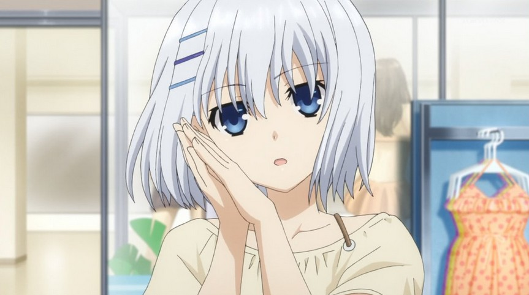

Origami is one of the main female characters in Date A Live, one of Shido's classmates, and is famous for her top grades.
Due to a Spirit killing her parents when she was a kid, she has harbored an intense hatred and hostility towards all spirits, as whenever she sees a Spirit, she would try everything to kill it, which is completely opposite with Shido's perspective. However, as Shido saved her in the past, she had a favorable impression towards him, but her behaviour always drives him crazy.
For more informations, please visit here
